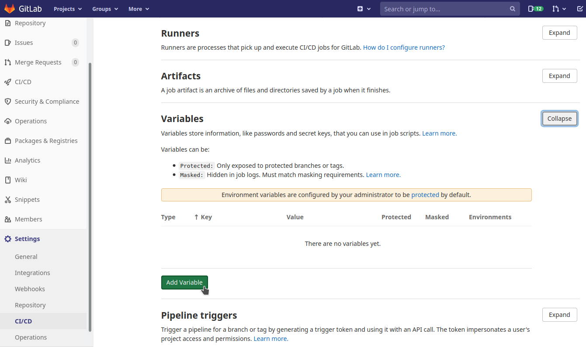
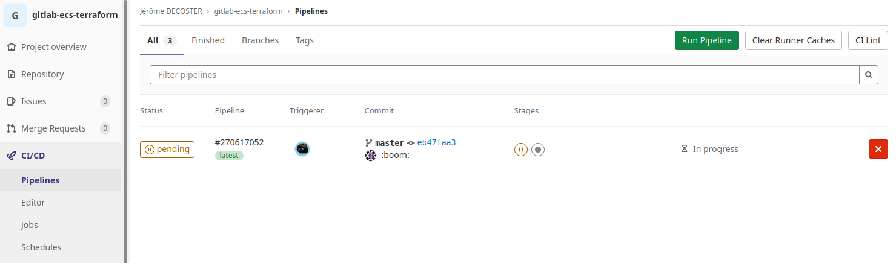

Gitlab + ECS + Terraform
- Create a simple node site
- Create an docker image and host it on ECR
- Use ECS to put this image online
- Use Terraform to create the AWS infrastructure
- The Terraform states are stored on terraform.io
- The source files are hosted on gitlab
- Use Gitlab CI/CD to automatically update the site online after a commit
- A new docker image will be automatically generated and hosted on ECR
- This new image will be automatically deployed on ECS
Install and setup the project
Get the code from this gitlab repository :
# download the code
$ git clone \
--depth 1 \
https://gitlab.com/jeromedecoster/gitlab-ecs-terraform.git \
/tmp/aws
# cd
$ cd /tmp/aws
To setup the project, run the following command :
# npm install + terraform init + create user + ecr-create
$ make setup
This command will :
Two files containing sensitive data were generated :
- The
.keyfile contains the AWS accesses. It is based on the .key.tmpl template. - The
.ecrfile contains the address of the docker repository. It is based on the .ecr.tmpl template.
The repository is created :
There is currently no image :
Let’s run the website locally :
# run the website locally
$ make dev
By opening the address http://localhost:3000 you can see the website :
This is a simple node server :
const app = express()
// ...
app.get('/', async (req, res) => {
try {
const url = process.env.NODE_ENV == 'development'
? `http://127.0.0.1:${PORT}/js/metadata.json`
: 'http://169.254.170.2/v2/metadata'
const result = await axios.get(url)
const container = result.data.Containers.find(e => e.Image.includes('tinyproxy') == false)
res.render('index', {
url,
data: JSON.stringify(result.data, null, 2),
image: container.Image,
network: container.Networks[0].NetworkMode,
address: container.Networks[0].IPv4Addresses[0]
})
} catch (err) {
return res.json({
code: err.code,
message: err.message
})
}
})
Displaying a simple HTML page :
<body>
<h1>Gitlab - ECS - Terraform</h1>
<div class="info">
<p>{{ url }}</p>
<ul>
<li><b>image</b>: {{ image }}</li>
<li><b>network</b>: {{ network }}</li>
<li><b>address</b>: {{ address }}</li>
</ul>
</div>
<pre><code class="language-json">{{ data }}</code></pre>
{% if settings.env == 'development' %}
<footer><u>development</u> version: {{ version }}</footer>
{% else %}
<footer>version: {{ version }}</footer>
{% endif %}
</body>
We can build the production image and push it to the ECR repository :
# build the production image + push to ecr
$ make build-push
The Dockerfile is simple :
FROM node:15.10-slim AS build
WORKDIR /app
ADD package.json .
RUN npm install
FROM node:15.10-slim
ENV NODE_ENV production
ENV PORT 80
WORKDIR /app
COPY --from=build /app .
ADD . .
EXPOSE 80
CMD ["node", "index.js"]
Our first image is now online :
Setup the Terraform workspace
We use app.terraform.io to store the various states of our infrastructure managed by Terraform.
We need to create a workspace :
We choose an API-driven workflow :
We call it gitlab-ecs-terraform :

To avoid problems with the TF_VAR_ management of Terraform Cloud we are going to modify the parameters used by default :
We choose the Local Execution Mode :
We are now going to create a token to be able to interact via an API with Terraform Cloud.
We have to go to the user settings :
We ask for the creation of a token :

We call it terraform login :
We get the token. We copy it to the clipboard :
Our token is correctly created :

We will now add this token to our local machine using the login command :
We must write yes to be able to continue :
$ terraform login
Terraform will request an API token for app.terraform.io using your browser.
If login is successful, Terraform will store the token in plain text in
the following file for use by subsequent commands:
/home/xxxxxx/.terraform.d/credentials.tfrc.json
Do you want to proceed?
Only 'yes' will be accepted to confirm.
Enter a value: yes
We continue by pasting the token stored in the clipboard :
Terraform will store the token in plain text in the following file
for use by subsequent commands:
/home/xxxxx/.terraform.d/credentials.tfrc.json
Token for app.terraform.io:
Enter a value: xxxxx
Retrieved token for user jeromedecoster
We can verify that our token has been added :
$ cat $HOME/.terraform.d/credentials.tfrc.json
{
"credentials": {
"app.terraform.io": {
"token": "xxxxx"
}
}
}
Creating the infrastructure
To create our cloud infrastructure and put our website online, we just run these commands :
# terraform validate
$ make tf-validate
# terraform plan + terraform apply
$ make tf-apply
To create the infrastructure, our script uses the data stored in the previously generated .key and .ecr files and uses the TF_VAR_ environment variables :
# terraform plan + terraform apply
tf-apply() {
source "$dir/.ecr"
export TF_VAR_ecr_image=$REPOSITORY_URI:latest
source "$dir/.key"
export TF_VAR_AWS_ACCESS_KEY_ID=$AWS_ACCESS_KEY_ID
export TF_VAR_AWS_SECRET_ACCESS_KEY=$AWS_SECRET_ACCESS_KEY
cd "$dir/infra"
terraform plan
terraform apply -auto-approve
}
Creation ends after a few minutes.
In the AWS EC2 interface we get the DNS address of our Load Balancer :
In the AWS ECS interface we can see that the 2 instances are running correctly :
We can view our website online using the DNS address in our browser :
Continuous Delivery from gitlab
We now want that, a modification pushed in Gitlab, to automatically update our website live.
We use Gitlab’s CI/CD capabilities by defining a .gitlab-ci.yml file.
Our .gitlab-ci.yml file defines two steps :
build-pushis used to create a new docker image and push it to ECRapplyupdates ECS via Terraform
---
stages:
- build
- apply
variables:
REPOSITORY: gitlab-ecs-terraform
DOCKER_HOST: tcp://docker:2375
build-push:
stage: build
image:
name: amazon/aws-cli
entrypoint: [""]
services:
- docker:dind
before_script:
- amazon-linux-extras install docker
- aws --version
- docker --version
script:
- cd website
- echo $CI_COMMIT_SHORT_SHA
- docker build --tag $DOCKER_REGISTRY/$REPOSITORY:$CI_COMMIT_SHORT_SHA --tag $DOCKER_REGISTRY/$REPOSITORY:latest .
- aws ecr get-login-password | docker login --username AWS --password-stdin $DOCKER_REGISTRY
- docker push $DOCKER_REGISTRY/$REPOSITORY:$CI_COMMIT_SHORT_SHA
- docker push $DOCKER_REGISTRY/$REPOSITORY:latest
apply:
stage: apply
image:
name: hashicorp/terraform:light
entrypoint:
- '/usr/bin/env'
- 'PATH=/usr/local/sbin:/usr/local/bin:/usr/sbin:/usr/bin:/sbin:/bin'
script:
- sed "s|{{TF_TOKEN}}|$TF_TOKEN|" credentials.tfrc.json > /root/.terraformrc
- cd infra
- terraform init
- terraform validate
- export TF_VAR_ecr_image=$DOCKER_REGISTRY/$REPOSITORY:latest
- export TF_VAR_AWS_ACCESS_KEY_ID=$AWS_ACCESS_KEY_ID
- export TF_VAR_AWS_SECRET_ACCESS_KEY=$AWS_SECRET_ACCESS_KEY
- terraform taint aws_ecs_task_definition.task_definition
- terraform plan
- terraform apply -auto-approve
needs:
- build-push
The above script uses 5 environment variables that we must declare in Gitlab settings :

The variables are now defined :
We are now going to make two modifications in the source code.
We modify our stylesheet to change the title color :
h1 {
color: blueviolet;
}
We are increasing the version of our site :
{
"name": "gitlab-ecs-terraform",
"version": "1.1.0",
We commit and push these changes on Gitlab :
$ git add .
$ git commit -m :boom:
$ git push
We can see that a pipeline has been added :

By clicking on this pipeline we can see both Build and Apply stages :
By clicking on the build-push job you can see its progress :
If the job is completed successfully, the next one starts :
The pipeline ends successfully after a few minutes of activity :
By reloading our website we can see that the modifications are online :
Note that via the Terraform Cloud interface, you can easily navigate through the history of the different states :
And see their content :
Our test is over, we can destroy our resources :
# terraform destroy + delete user + delete ecr repository
$ make destroy